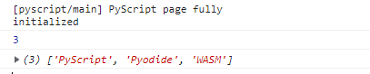

Another month, another big release for PyScript! With a shorter release cycle, there's been less time for upstream projects (Pyodide, Emscripten) to move ahead, but there's still been loads of work done on PyScript in the past month.
display()There's one change to the PyScript API that's so big, it's getting its own whole section! And it has to do with how PyScript outputs to the browser window. print() no longer outputs to the browser window! (#749)
One key Python concept to know here is sys.stdout, a File object that Python writes to when it wants to print() something to the terminal, display an input() prompt, and so on. Other modules may write directly to stdout if they wish, but print() is by far the most visible use of stdout.
Prior to 2022.11.1, Python's sys.stdout was routed to the screen via fairly complicated wrapper setup. However, a browser window has so many more dimensions of possibility for where we might want to place content compared to a terminal. Thus, the metaphor of "use print() and we'll guess where to put your content" doesn't really hold up.
As of 2022.11.1, print() goes to the developer console; display() is for outputting to the browser window:
display(*values, target=None, append=True)*values (list) - the list of objects to be displayed. Can be any of the following MIME types:: "text/plain", "text/html", "image/png", "image/jpeg", "image/svg+xml", "application/json" or "application/javascript"
target (str)- the ID of the html tag to output to. If none, output to the current <py-script> tag.
append (boolean) if the output is going to be appended or not to the `target`ed element. It creates a <div> tag if True and a <py-script> tag with a random ID if False
So for example, in place of the usual print("Hello, world"), one could do one of these (they have slightly different behaviors - try them out!):
Following another PR by Antonio (#915), display() escapes any HTML given to it as an input string, so display(<br>) prints the literal characters <br> to the screen, instead of creating a newline. For non-string inputs, display(some_obj) calls repr(some_obj) and escapes that. If you do want to inject HTML into your page, a new object is to use the new HTML class, a la display(HTML("<p>A new paragraph</p>")).
So if display() is for writing to the screen, what does print() do? It writes to the Developer Console. This is the closest analog in the browser to a "dumb terminal", and so it makes a certain amount of sense for stdout to be routed there.
There are certain small differences, since of course the dev console isn't a terminal. For instance, we discovered just the other day that console.log() (which is used to write to the dev console) doesn't output unless it receives a newline. So something like print("Hello world", end = "") won't show up until you log something else with a newline in it!
If I were a betting man, I'd hedge that the API for display() is likely to continue to change and evolve. It's a brand-new and breaking feature, and I suspect its semantics are going to continue to get tweaked. If you find more issues or inconsistencies, be sure to raise an issue on GitHub or come tell us about it on the PyScript Discord.
<py-config> [[fetch]]
Previously, all files listed in <py-config> paths: were fetch()'d from the listed URLs and dropped into the embedded filesystem in the same folder as the running Python Script. Which is to say, pointing a path to the relative URL 'data/files/Feb-24/info.txt' would make that file available via with open('info.txt')... .
Now, there are additional options for fetching multiple files in a way that preserves their URL/directory structure. They're all bundled into a new "fetch configuration" table in <py-config> labelled [[fetch]], with the following members:
| Value | Type | Description |
| `from` | string | Base URL for the resource to be fetched. |
| `to_folder` | string | Name of the folder to create in the filesystem. |
| `to_file` | string | Name of the target to create in the filesystem. Cannot be combined with "files" |
| `files` | List of string | List of files to be downloaded. Cannot be combined with "to_file" |
The pseudo-code for what PyScript will fetch is something like this:
{{< highlight "python3" "linenos=false" >}} if both "files" and "to_file" are specified: Error if "from" is not specified, from = "" #defaults to relative URLs if "to_folder" is not specified, to_folder = "." #defaults to the working current directory, where Python Scripts are run format if "files" is specified: for each file in "files": #These concatenations are done in a smart way to try to avoid dangling/missing "/"s source_URL = "from" + file destination = "to_folder" + file download object from the source_url to destination in the local file system else: #"files" not specified: if "to_file" is specified: download object from url "from" to "to_folder" + "to_file" else if "from" ends in a file-name: #i.e. the part after the last "/" download object from url "from" to "to_folder" + 'filename' at end of "from"{{< /highlight >}}Let's look at some recipies for using these new attributes to fetch resoures from the web and download them to the Emscripten local file system to Python can use them. For the examples where we're fetching our own files and modules, we'll assume our site has the following simple structure:
my-site/
├─ content/
│ ├─ info.txt
│ ├─ index.html <<< File with <py-config>
├─ files/
│ ├─ data.csv
├─ packages/
│ ├─ my_package/
│ │ ├─ __init__.py
│ │ ├─ helloworld/
│ │ │ ├─ __init__.py/
│ │ │ ├─ greetings.py/
Single File
Single File w/ Renaming
To Another Local Folder
From Another Folder to Current Working Directory
Multiple Files, Preserving Folder Structure
From an API Endpoint
pyscript.js now exposes the instance of Pyodide it creates as a JavaScript object. Users wishing to run code directly in Pyodide, or to use another JavaScript module that interacts directly with Pyodide, can use this exported reference to do so. (#868)
The Pyodide runtime is accessible as pyscript.runtime.interpreter, like so:
Note that the runtime will not be available until it has been loaded by PyScript and initialized. In the example above, we use a button to defer executing the desired code until sometime after PyScript has initialized; in the next example, we'll use an Event.
The pyscript.runtime.globals attribute holds a reference to Python globals() dictionary, making it easy to reference Python objects from JavaScript. By the wonder that is Pyodide, the objects are proxied back and forth pretty much seamlessly, but especially when logging to the console, using the toJs() function makes the conversion explicit:
Dev Console Result:
Fabio Rosado (yes, there's two Fabios on the PyScript team now!) put together a great PR that cleans up the presentation of warnings and errors caused during PyScript startup - if you write invalid TOML for <py-config>, say, or use a deprecated function or feature. (#909) (Speaking of which, see below for more notes on deprecated features.)
The new appearance of warnings and errors caused during PyScript startup and configuration.
The new appearance of errors that are thrown when running Python code.
The py-config system has been overhauled to simply its use internally - including simplifying how the default configuration options are merged with user-supplied options (#806), dealing with multiple <py-config>s on a page (#826), and finally killing <py-env> altogether (#775).
The TOML parser handling has also been improved, in that it no longer hangs forever if given misshapen TOML. (#815)
An important clarification has also been added to the docs - because of the way the TOML format works, if you're using TOML for your py-config, [[runtimes]] must be the last element. If the [[runtimes]] table precedes the other individual elements (like `paths` or `packages`), those elements end up inside [[runtimes]], which will cause them to be missed. (#861)
This in addition to the changes to [[fetch]] noted above.
Previous, any unknown HTML elements were hidden by pyscript.css in an attempt to suppress onscreen visibility of things like <py-config>. This had the unintended consequence of hiding elements with typos - for example, a user-typed <py-scrip> element would be "unknown" and also hidden. Now, PyScript explicitly only hides the page-elements that need hiding. (#837)
PyScript releases now come with a directory-listing of files and a brief example. See, for example, https://pyscript.net/unstable. (#839)
Just like JupyterLab 6, PyScript now uses the latest version of CodeMirror to power the in-browser <py-repl> component. This comes with a (far more stable) API and lots of other improvements. (#814)
The PyScript core team hosted its first Community Call on October 18th! (#836) About a dozen people attended, mostly from the PyScript core team and related contributors. We unfortunately forgot to hit 'record' on the call, but I did jot down a few notes. (None of this should be taken as gospel or comprehesive; It's just what I, one dude, happened to scribble down.)
imported by default into a PyScript environment.Community maintainer Paul Everitt has been hard at work assembling Awesome PyScript, a curated list of awesome things relative to PyScript. If you want inspiration on what PyScript can do, this is the place to go - there's collections of videos, demos, conference talks, and more.
Have you done something awesome with PyScript? Drop the Awesome PyScript repo a comment or a Pull Request to have it included!
A new GitHub repository at PyScript/Research has been started, as a home for overarching research, development, and proposals for PyScript. New and great ideas were popping up in issues in the main repo and being lost somewhat, so the new repo is a home for larger proposals that need need multiple files to explain, or that generate longer discussions than fit in a single issue.
The PyScript Discord is now the official hub for realtime communication around PyScript - both internally for the maintainers and the for the community to gather, ask questions, and get help. Come join us!
The PyScript Documentation now has a Development Section, as a central place for notes about how the development and release process for PyScript works.
Antonio has embarked on several of massive refactoring endevours, to streamline and rationalize the process of how PyScript loads itself and Pyodide and how it then executes Python scripts. Hopefully the changes this imparts to the end-users of PyScript are minimal, but speaking from a maintenance and codebase standpoint, the amount that's been done to make sense of both of these processes makes it a significantly easier to reason about what-happens-when. (#806, #850, #881, #884)
The pytest-driven test system used to re-download the Pyodide runtime and other resources for each test, significantly slowing it down. The test system now has the ability to cache resources between tests, and retry tests on network failures. (829)
We also now have a way for the test system to watch for and confirm that specific errors are being thrown, allowing for the writing of negative integration tests (that should throw specific errors in PyScript). (#874)
The original version of the PyScript Demo Site and other parts of the build infrastructure and styling were built around Svelte. Thanks to several PRs and lots of refactoring, Svelte is now entirely gone (#806, #830, #886)
Anaconda Senior Tech Writer Katherine Kinnaman jumped into the Github project, creating issues for much-needed documentation (#846,#847,#848,#849). And as she mentioned in a comment:
We also figured that if these issues were put out there, maybe a community member might pick it up...
So if you're looking to get your feet wet contributing to the PyScript documentation, this would be a great place to start! Ms. Kinnaman also lists a few criteria for what that documentation would ideally include, as an outline for anyone who wants to take a stab.
Late Breaking News! Engineering Manager Ted Patrick jumped in and created the start of documentation for the <py-script>, <py-repl>, and <py-config> tags! Thanks Ted.
Paul Everitt, Fabio Rosado and I are now community maintainers on the PyScript project. It's been tremendously exciting and satisfying working on and with PyScript the past few months - the core team over at Annaconda has been swell all around, and I'm very grateful to be a part of the team in my own way. (#824 #825 (#898))
There's a proposal (a couple proposals) swirling around over in PyScript/Research about the syntax for events ("py-[event]" or "onclick" or otherwise). What's exciting is that there's tons of possibilities! Now the hard part will be to sort together the possibilities and potentiatials, weight up the pros and cons (run functions in Python vs. JavaScript, access to JS and/or Python objects as arguments, do we pass literal code or references to Callables, etc) and make the call.
...At least for now. This is another area that might see two or three more rounds of evolution before it stabilizes. Or even potentially splits into more than one thing - there may be multiple independent systems being developed that can coexist. Time will tell.
Async/Await is still a swirling topic - one that I've personally waded into publishing a long writeup on Asyncio in PyScript. I suspect that one solution (in the near or long-term) may be to eliminate the possibility of doing "Implicit Coroutine Awaiting", since that's essentially a separate code-path from the regular way Python gets run. I personally wouldn't be too sad about that option, even after writting up an embarassingly long screed on how runPythonAsync() works.
There's some strong agreement among the maintainers, I would say, that something needs to be done about PyScript.py, the Python side of what PyScript is. Right now, the file in its entirity is run when the Pyodide runtime starts and its... a lot. There's a lot of great functionality there - especially with the new display() syntax being merged - but it feels little haphazard. There's a sense that it should maybe be... a module? A package? Several modules? Something an IDE can ingest and use for autocompletion say. Or maybe there's a better way?
And once that Python is rationalized, there's the question of "How many of the objects defined in this file(s) should be imported by default?" All/some/none? Are some core enough to what PyScript "is" that they should always be imported? Key questions for sure, and ones which will probably break things when answered. But breaking things is good!
Here's to breaking more things.